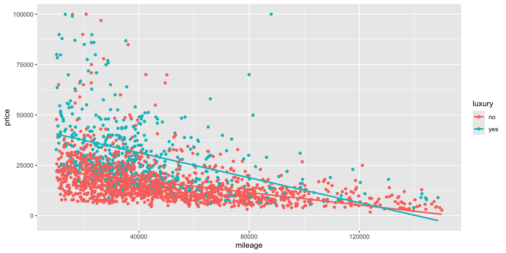

Data Science for Business Applications
Interactions
- Last week, we predicted evaluation score from beauty and gender, and the model forced the lines to be parallel:
- What if we could build a more flexible model without forcing the lines to be parallel?
What is an interaction?
- An interaction is an additional term in a regression model that allows the slope of one variable to depend on the value of another.
Does beauty matter more for men, or for women?
- A categorical variable and a quantitative variable
- We found that for the same level of attractiveness, male professors tend to get higher evaluation scores than female professors
- But what if the effect of beauty depends on gender (is different for men vs women)?
Interactions: Beauty and Gender
- The idea is to add a new variable that is itself the product of the two variables:
\[ \hat Y = \hat\beta_0 + \hat\beta_1(\text{gender}) + \hat\beta_2(\text{beauty}) + \hat\beta_3(\text{gender})(\text{beauty}) \]
- For female professors, male = 0, so the \(\beta_1\) and \(\beta_3\) terms cancel out:
\[ \hat Y = \hat\beta_0 + \hat\beta_2(\text{beauty}) \]
- For male professors, male = 1, so we get both a different intercept and a different slope for
beauty:
\[ \hat Y = (\hat\beta_0 + \hat\beta_1) + (\hat\beta_2+\hat\beta_3)(\text{beauty}) \]
Interactions: Beauty and Gender
model1 <- lm(eval ~ beauty*gender, data=profs)
summary(model1)
Call:
lm(formula = eval ~ beauty * gender, data = profs)
Residuals:
Min 1Q Median 3Q Max
-1.83820 -0.37387 0.04551 0.39876 1.06764
Coefficients:
Estimate Std. Error t value Pr(>|t|)
(Intercept) 3.89085 0.03878 100.337 < 0.0000000000000002 ***
beauty 0.08762 0.04706 1.862 0.063294 .
gendermale 0.19510 0.05089 3.834 0.000144 ***
beauty:gendermale 0.11266 0.06398 1.761 0.078910 .
---
Signif. codes: 0 '***' 0.001 '**' 0.01 '*' 0.05 '.' 0.1 ' ' 1
Residual standard error: 0.5361 on 459 degrees of freedom
Multiple R-squared: 0.07256, Adjusted R-squared: 0.0665
F-statistic: 11.97 on 3 and 459 DF, p-value: 0.000000147
- Beauty seems to matter more for men than for women!
- The gender gap is largest for good-looking professors
Main effects and interaction effects
In a model with an interaction term \(X_1X_2\), you must also keep the main effects: the variables that are being interacted together.
The main effect of \(X_1\) represents the predicted increase in \(Y\) for a 1-unit change in \(X_1\), holding \(X_2\) constant at zero.
- The main effect
gendermale(0.20) represents the predicted advantage, but only for an average-looking professor (beauty = 0).
- The main effect
beauty(0.09) represents the predicted improvement in evaluation scores for each additional beauty point, but only among women (gendermale = 0).
- The main effect
You can also include other variables in the model that are not being interacted!
Interactions - luxury cars
- Is there a difference in the price of the car depending on what type of badge it holds?
- In other words, does the effect of one variable (i.e., its slope coefficient) depend on the value of another?
- For this we will include a interaction.
Interactions
- The idea is to add a term that is the product of the two variables:
\[ \text{price} = \beta_0 + \beta_1\text{mileage} + \beta_2\text{luxury} + \beta_3 (\text{luxury} \times \text{mileage}) + e \]
If we have a non-luxury car, then
luxury= \(\text{"no"} = 0\), so the \(\beta_2\) and \(\beta_3\) terms cancel out: \[ \text{price} = \beta_0 + \beta_1\text{mileage} + e \]If we have a luxury car, then
luxury= \(\text{"yes"} = 1\), so we get both a different intercept and a different slope for mileage: \[ \text{price} = (\beta_0 + \beta_2) + (\beta_1 + \beta_3) \text{mileage} + e \]
Regression Model
- Let’s run the regression model
lm3 = lm(price ~ mileage*luxury, data = cars_luxury)
summary(lm3)
Call:
lm(formula = price ~ mileage * luxury, data = cars_luxury)
Residuals:
Min 1Q Median 3Q Max
-25662 -6055 -2066 3563 83626
Coefficients:
Estimate Std. Error t value Pr(>|t|)
(Intercept) 23893.601384 545.040269 43.838 < 0.0000000000000002 ***
mileage -0.154697 0.009595 -16.122 < 0.0000000000000002 ***
luxuryyes 19772.433662 1092.529243 18.098 < 0.0000000000000002 ***
mileage:luxuryyes -0.155457 0.021457 -7.245 0.000000000000606 ***
---
Signif. codes: 0 '***' 0.001 '**' 0.01 '*' 0.05 '.' 0.1 ' ' 1
Residual standard error: 10880 on 2084 degrees of freedom
Multiple R-squared: 0.36, Adjusted R-squared: 0.3591
F-statistic: 390.8 on 3 and 2084 DF, p-value: < 0.00000000000000022Interpretation of the model
How do we interpret this model?
intercept(baseline),luxury= \("no"\) = 0: For a non-luxury car with zero mileage, the average selling price is equal to US$ 23,894.Now we have two cases:
luxury= \("no"\) = 0:mileage: For each extra increase in mileage (in miles), there will be a decrease of US$ 0.15 in the price of non-luxury cars.luxury= \("yes"\) = 1:mileage: For each extra increase in mileage (in miles), there will be a decrease of US$ 0.16 in the price of luxury cars on top of the decrease of US$ 0.15 of non-luxury cars.
Interpretation of the model
We also have the following interpretation:
luxury= \(\text{"yes"}\) = 0 \[ \begin{align} \text{price} &= 23,894 - 0.15\times \text{mileage} + 19,772 (0) - 0.16\times \text{mileage} (0) \\ &= 23,894 - 0.15\times \text{mileage} \end{align} \]luxury= \(\texttt{"yes"}\) = 1 \[ \begin{align} \text{price} &= 23,894 - 0.15\times \text{mileage} + 19,772 (1) - 0.16\times \text{mileage} (1) \\ &= (23,894 + 19,772) - (0.15 + 0.16) \times \text{mileage} \\ &= 43,666 - 0.31 \times \text{mileage} \\ \end{align} \]We have that not only the intercept change but also the slope.
- The lines are not parallel in this case which indicates a change in the slope due to the intercation term.
ggplot(cars_luxury, aes(x = mileage, y = price, col = luxury)) +
geom_point() +
geom_smooth(method = "lm", se = FALSE)
When should you use interactions in a model?
- Interactions make a model more complex to analyze and explain, so it’s only worth doing so when you get a substantial bump in \(R^2\) by including the interaction.
- Choose interactions by thinking about what you are trying to model: if you suspect that the impact of one variable depends on the value of another, try an interaction term between them!
Interactions \(\neq\) Correlations between predictor variables
- Instead, interactions let us model a situation where the relationship of one predictor variable and \(Y\) is different depending on the value of another \(X\) variable:
- How much attractiveness matters for student evaluation scores depends on gender.
You’ll experiment with this in the lab!
- Two categorical variables
- Two numerical variables